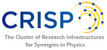
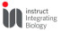

<div class="home bg">
   <table id="hor-minimalist-a">
					<tr>
							<th width="80px"><b>Partner</b></th>
							<th><b>Name</b></th>
							<th><b>Description</b></th>
					</tr>
					<tr onclick="window.open('http://www.pan-data.eu/', '_blank', 'location=yes,height=768,width=1024,scrollbars=yes,status=yes');">
							<td class="center"></td>
							<td>PaNdata</td>
							<td>Photon and Neutron data infrastructure initiative</td>
					</tr>
					<tr onclick="window.open('http://www.crisp-fp7.eu/', '_blank', 'location=yes,height=768,width=1024,scrollbars=yes,status=yes');">
							<td class="center"></td>
							<td>CRISP</td>
							<td>The Cluster of Research Infrastructures for Synergies in Physics</td>
					</tr>
					<tr onclick="window.open('http://www.iruvx.eu/', '_blank', 'location=yes,height=768,width=1024,scrollbars=yes,status=yes');">
							<td class="center"></td>
							<td>EuroFEL</td>
							<td>The preparatory phase of EuroFEL (IRUVX-PP) prepared the establishment of the EuroFEL Consortium to link FEL & SPS facilities in Europe closer together.</td>
					</tr>
					<tr onclick="window.open('http://www.calipso.wayforlight.eu/', '_blank', 'location=yes,height=768,width=1024,scrollbars=yes,status=yes');">
							<td class="center"></td>
							<td>CALIPSO</td>
							<td>CALIPSO coordinates the European synchrotrons and FELs, including the three ESFRI roadmap projects European XFEL, EuroFEL and the ESRF Upgrade Programme, towards a fully integrated network.</td>
					</tr>
					<tr onclick="window.open('http://nmi3.eu/', '_blank', 'location=yes,height=768,width=1024,scrollbars=yes,status=yes');">
							<td class="center"></td>
							<td>NMI3</td>
							<td>Integrated Infrastructure Initiative for Neutron Scattering and Muon Spectroscopy.</td>
					</tr>
					<tr onclick="window.open('https://www.fels-of-europe.eu/', '_blank', 'location=yes,height=768,width=1024,scrollbars=yes,status=yes');">
							<td class="center"></td>
							<td>FELS OF EUROPE</td>
							<td>FELS OF EUROPE is an initiative of the ESFRI projects EuroFEL and Europen XFEL</td>
					</tr>
					<tr onclick="window.open('http://www.biostruct-x.eu/', '_blank', 'location=yes,height=768,width=1024,scrollbars=yes,status=yes');">
							<td class="center"></td>
							<td>BIOSTRUCTX</td>
							<td>BioStruct-X is a project funded by the Seventh Framework Programme (FP7) of the European Commission that establishes a state‐of‐the‐art coordinated and multi‐site infrastructure to support access for established and emerging key methods in structural biology.</td>
					</tr>
					<tr onclick="window.open('https://www.structuralbiology.eu/', '_blank', 'location=yes,height=768,width=1024,scrollbars=yes,status=yes');">
							<td class="center"></td>
							<td>INSTRUCT</td>
							<td>Instruct is a pan-European research infrastructure in structural biology, making high-end technologies and methods available to users.</td>
					</tr>
				</table>
</div>
